Tcl/Tk にはいろいろなウィジェットが用意されていますが、場合によっては、ウィジェットの機能を無効にしたいことがあります。たとえば、ボタンやメニューに割り当てた機能が動作しない場合、ボタンやメニューの選択を無効にしなければいけませんが、そのことをユーザーに知らせた方が使いやすいアプリケーションになります。このような場合、ウィジェットの状態を制御する -state オプションを使いましょう。-state の値を表に示します。
| normal | 通常の状態 |
| active | アクティブな状態 |
| disabled | 無効な状態 |
UNIX の X Window では、ウィジェットの上にマウスカーソルがくると、そのウィジェットを強調表示することで、マウスボタンを押したときに何か処理が行われることを表します。これをアクティブな状態といいます。Windows の場合、ウィジェットの上にマウスカーソルがきても強調表示されません。このため、Windows 版 Tcl/Tk の動作もそのようになっています。
-state に disabled を設定すると、そのウィジェットは無効な状態になります。ボタンウィジェットであれば、ラベルの色が変わりマウスでボタンをクリックしても押すことができなくなります。テキストの色はオプションで指定することができます。
| -activeforeground | アクティブ時の色を指定 |
| -activebackground | アクティブ時の背景色を指定 |
| -disabledforeground | 無効時の色を指定 |
無効時の背景色は通常の背景色と同じになります。
それでは簡単な例を示しましょう。ラジオボタンを使ってボタンの状態を設定します。
リスト：ボタンの状態を変更する
# フォントの設定
option add *font {FixedSys 14}
# ウィジェットの設定
radiobutton .r0 -text "normal" -value normal -variable var \
-command change_state
radiobutton .r1 -text "active" -value active -variable var \
-command change_state
radiobutton .r2 -text "disabled" -value disabled -variable var \
-command change_state
button .b -text button -activeforeground green -disabledforeground red
pack .r0 .r1 .r2 .b
# 初期化
set var normal
# ボタンの状態を変更する
proc change_state {} {
global var
.b configure -state $var
}
ラジオボタンで選択した値は大域変数 var に格納され、change_state でボタンの状態を変更します。変数 var は、あらかじめ normal に初期化しておきます。プロシージャ change_state は簡単にプログラムできます。ウィジェットコマンド configure を使って -state に変数 var の値をセットするだけです。これでボタンの状態を変更することができます。
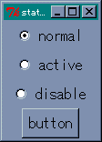 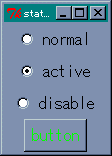 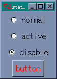 ボタンの状態を変更次はメニューの状態を変更してみましょう。一般に、メニューには複数の項目を登録しますが、それらの項目に対していろいろなオプションを設定することができます。項目を操作するために複数のウィジェットコマンドが用意されていますが、オプションを設定するコマンドが entryconfigure です。
entryconfigure 項目 option [value]
メニュー項目に対する configure コマンドと考えてください。項目の指定には次の方法があります。
| N | 数値で指定 (先頭の項目が 0 番目となる) |
| @N | 画面上端から N ピクセルだけ下にある項目 |
| end, last | 最後の項目 |
| active | アクティブな状態にある項目 |
| none | どれでもない項目 (全ての項目を非アクティブにするために使用する) |
| パターン | パターンと一致するラベル名を持つ項目 |
簡単な例として、次のようなメニューを考えてみましょう。
リスト : メニューの状態を変更する
# フォントの設定
option add *font {FixedSys 14}
# メニューの設定
menu .m -type menubar
. configure -menu .m
.m add cascade -label "Menu" -under 0 -menu .m.m1
menu .m.m1 -tearoff no
.m.m1 add command -label "Menu1" -command dummy
.m.m1 add command -label "Menu2" -command dummy
.m.m1 add command -label "Menu3" -command dummy
# ラジオボタンの設定
radiobutton .r0 -text "normal" -value normal -variable var -command change_state
radiobutton .r1 -text "active" -value active -variable var -command change_state
radiobutton .r2 -text "disable" -value disable -variable var -command change_state
pack .r0 .r1 .r2
# 初期化
set var normal
# メニューの状態を変更する
proc change_state {} {
global var
.m.m1 entryconfigure Menu1 -state $var
}
Menu1 の状態をラジオボタンで設定します。ラジオボタンが選択されたら、change_state でメニューの状態を変更します。項目の指定にはパターンを使いました。数値を使うよりもこの方がわかりやすいでしょう。メニューも色を指定することができますが、無効時の色を指定する -disabledforeground は用意されていません。メニューの状態を disabled に設定すると、Menu1 が灰色に表示され選択することができなくなります。
それから、Tcl/Tk 8.2 の場合、メニューバーに表示されるメニュー項目では、状態を変更しても色は変化しません。-foreground や -background による色の指定も受け付けはしますが、実際に色は変化しません。ご注意くださいませ。
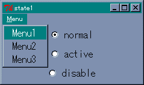 通常のメニューもうひとつ便利なオプションを紹介しましょう。オプション -cursor によって、マウスカーソルの形状を変更することができます。たとえば、待ち状態を表すカーソルに変更するには、次のように指定します。
configure -cursor wait
メインウィンドウ ( . ) のマウスカーソルを wait に変更します。空リストを設定すると、デフォルトのマウスカーソルに戻ります。Windows で使用されるカーソル名には次のものがあります。
starting, arrow, ibeam, icon, no, size_ne_sw, size_ns, size_nw_se, size_we uparrow, wait, crosshair, fleur sb_v_double_arrow, sb_h_double_arrow center_ptr, watch, xterm
このほかにも手の形をした hand1, hand2 やボートの形をした boat など、いろいろなカーソルが用意されています。ところが、Tcl/Tk のヘルプにはカーソル名の記述が見当たりません。使用できるカーソル名を知りたい場合は、面倒ですが Tk のソースファイルを参照してください。
今度はウィンドウの大きさを変更してみましょう。もちろん Tcl/Tk は、デフォルトでウィンドウのリサイズに対応しています。今までのサンプルプログラムでも、マウスでウィンドウの大きさを変更することができます。ただし、ウィジェットの大きさは変化しません。ウィンドウを小さくしたらウィジェットが表示されなくなった、ということも起こります。まあ、これはウィンドウの大きさを制限することで回避できるのですが、アプリケーションの中には、ウィンドウのリサイズに合わせてウィジェットの大きさを変更した方が使いやすくなる場合があります。
ところで、ウィジェットのリサイズは面倒だな、と思われた方はいませんか。まじめに考えると、ウィンドウのサイズからウィジェットのサイズを計算して、大きさを変更する処理が必要になるのですが、そこは Tcl/Tk です。ジオメトリマネージャーに用意されているオプションを指定するだけで、ウィンドウのサイズに合わせてウィジェットの大きさを変更することができます。Packer を使う場合は、次のオプションを指定します。
余白をウィジェットに割り当てただけでは、ウィジェットは大きくなりません。ウィジェットを引き伸ばすための -fill オプションを指定してください。それでは簡単な例を示しましょう。次のコマンドを wish のコンソールから入力してください。
% button .b0 -text "button 0" .b0 % button .b1 -text "button 1" .b1 % pack .b0 .b1 -expand 1 -fill both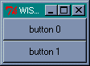 Packer によるボタンの配置
ウィンドウ全体に 2 つのボタンが表示されます。マウスでウィンドウの大きさを変えてみてください。ウィンドウに合わせてボタンの大きさも変化します。このように、Tcl/Tk ではオプションを設定するだけで、ウィンドウのリサイズにも簡単に対応することができるのです。
ウィジェットを配置する順番も大切です。Packer はウィンドウが小さくなるとウィジェットを圧縮しますが、本当にスペースがなくなるとウィジェットは表示されなくなります。このとき、配置された逆順でウィジェットが削除されます。つまり、最初に配置されたウィジェットが最後まで残るのです。大切なウィジェットは最初に配置した方がいいでしょう。
Gridder のリサイズはマスの状態を設定するサブコマンド columnconfigure と rowconfigure で行います。
grid columnconfigure/rowconfigure ウィンドウ 位置 オプション
| -minsize 数値 | 最小の幅/高さを指定する |
| -weight 数値 | 余白を配分するときの割合を指定する |
| -pad 数値 | 詰め物の指定 |
リサイズに対応するにはオプション -weight に 1 以上の整数値を指定します。簡単な使用例を示しましょう。ボタンを 4 つ Gridder で配置します。
リスト : Gridder のリサイズ
foreach i {0 1 2 3} {
button .b$i -text "button $i"
}
grid .b0 -column 0 -row 0 -sticky nsew
grid .b1 -column 0 -row 1 -sticky nsew
grid .b2 -column 1 -row 0 -sticky nsew
grid .b3 -column 1 -row 1 -sticky nsew
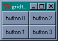 Gridder によるボタンの配置
columnconfigure は縦方向に配置されたマスのオプションを設定します。次のように、0 列に -weight 1 を設定します。
grid columnconfigure . 0 -wieght 1
ボタンはメインウィンドウに配置されているので、ウィンドウの指定はピリオド ( . ) となります。これで、ウィンドウが横に大きくなると、0 列に配置されたボタン .b0 と .b1 も横に大きくなります。
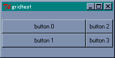 button 0, 1 は横方向に伸びる1 列目は -weight の指定がないので、余白は割り当てられません。それでは、次の指定を追加してみましょう。
grid columnconfigure . 1 -weight 2
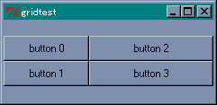 4 つのボタンが横方向に伸びる
今度は、1 列目にも余白が割り当てられますが、-weight の設定が 2 なので 0 列の 2 倍の余白が割り当てられます。つまり、ボタン .b2 と .b3 の方が大きく伸びるわけです。
このままではウィジェットの縦方向が大きくなりません。これに対応するには rowconfigure を使います。次の指定を追加してください。
grid rowconfigure . 0 -weigth 1 grid rowconfigure . 1 -weight 2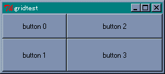 4 つのボタンが縦横方向に伸びる
縦に増えた余白は、0 行と 1 行に 1 対 2 の割合で配分されます。したがって、ウィンドウを大きくするとボタン .b3 がいちばん大きくなります。縦と横の関係で混乱しそうですが、実際にプログラムを動かしてみてください。納得してもらえると思います。
次に、キャンバスウィジェットのリサイズを行ってみましょう。キャンバスもウィジェットなので、pack や grid のオプションを指定することで、ウィンドウのリサイズに対応することができます。次のプログラムを wish のコンソールから入力してください。
% canvas .c0 -bg darkgreen -width 200 -height 100 .c0 % pack .c0 -fill both -expand 1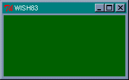 キャンバスウィジェットを配置
マウスでウィンドウの大きさを変えると、キャンバスウィジェットの大きさも変わりますね。それでは、キャンバスに描かれた図形はどうなるでしょうか。
% .c0 create rectangle 10 10 160 60 -fill red 1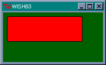 図形を配置
ウィンドウの大きさを変えても、図形の大きさは変わりません。図形は pack で配置されているわけではないので、Packer はキャンバスウィジェットを引き伸ばすことはできても、その中の図形を操作することはできないのです。図形はユーザーが定義したものですから、Packer が関知しないのは当然のことですね。したがって、ウィンドウのリサイズに対応するには、ユーザー側で図形を再描画する処理をプログラムしなければいけません。
次回は「アナログ時計」を例題に、キャンバスウィジェットのリサイズに挑戦してみましょう。
簡単な例題として、リサイズ可能なアナログ時計を作ってみましょう。時計をウィンドウいっぱいに広げるのは面倒なので、幅と高さの短い方に合わせて時計を描画することにします。キャンバスウィジェットに長針、短針、秒針を描き、after コマンドを使って 1 秒ごとに針の位置を動かします。短針は動きを滑らかにするために、1 分ごとに位置を動かします。したがって、短針を動かす角度は 360 / (12 * 60) = 0.5 度となります。
現在の時間はコマンド clock を使って求めることができます。
clock format で指定できる書式はヘルプを参照してください。今回は時間に関する書式を使います。
%H, %I 時刻（24時間制, 12時間制） %M 分（00 - 59） %S 秒（00 - 59）
clock を使えば、デジタル時計は簡単に作成することができます。
リスト : デジタル時計
# 時刻の表示
proc show_time {} {
global buffer
set buffer [clock format [clock seconds] -format "%H:%M:%S"]
after 1000 show_time
}
# フォントの設定
option add *font {FixedSys 14}
# ラベルの設定
label .l0 -textvariable buffer
pack .l0
show_time
メニューでフォントを変更できるように改造すると、おもしろいと思います。
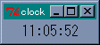 デジタル時計今回の時計は大きさを変更するので、あらかじめ針の位置を計算しておくことはできません。といって、1 秒ごとに針の角度を計算するのも面倒です。そこで、あらかじめ位置の計算に必要な三角関数 (sin, cos) の値を求めておくことにします。
リスト : sin, cos テーブルの作成
for {set i 0} {$i < 60} {incr i} {
set rad [expr 3.14 / 30 * $i]
set s1 [format "%02d" $i]
set sin_table($s1) [expr sin($rad)]
set cos_table($s1) [expr cos($rad)]
for {set j 0} {$j < 12} {incr j} {
set rad [expr 3.14 / 360 * ($j * 60 + $i)]
set s2 [format "%02d" $j]
set sin_table($s2,$s1) [expr sin( $rad )]
set cos_table($s2,$s1) [expr cos( $rad )]
}
}
sin, cos の値はそれぞれ sin_talbe と cos_table に格納します。clock format で返される文字列は、00 - 59 のように先頭に 0 が付くときがあるので、数字が一桁の場合は format の書式 "%02d" で数字の先頭に 0 を付けるようにします。また、sin, cos の引数はラジアンなので、度数を変換して変数 rad にセットします。長針と秒針の場合、添字は 00 から 59 となり、短針の場合は時と分を合わせた 00,00 から 11,59 となります。
次は画面の設定です。ウィンドウが小さくなると時計がよく見えないので、ウィンドウの大きさを制限します。これはコマンド wm minsize/maxsize で設定することができます。幅と高さはピクセル（ドット）単位で指定します。ウィンドウのリサイズを禁止したい場合は、wm resizable 0 0 と指定します。プログラムは次のようになります。
リスト : 画面の設定
# ウィンドウの設定
wm minsize . 100 100
wm maxsize . 400 400
canvas .c0 -width 140 -height 140 -bg darkgreen
pack .c0 -expand 1 -fill both
# 図形の生成
set backboard(circle) \
[.c0 create oval 5 5 135 135 -fill darkgray -outline darkgray]
for {set i 0} {$i < 12} {incr i} {
set backboard($i) [.c0 create line $i $i 135 135 -width 2.0]
}
set hour [.c0 create line 70 70 70 30 -fill blue -width 3.0]
set min [.c0 create line 70 70 70 20 -fill green -width 2.0]
set sec [.c0 create line 70 70 70 15 -fill red]
画面の大きさは、幅と高さを 100 から 400 ピクセルの範囲に制限します。背景の円と目盛は、図形 ID を配列 backboard に格納します。針の図形 ID は、変数 hour, min, sec に格納します。ここは図形を生成するだけなので、位置はでたらめでもかまいません。
さて、問題はウィンドウがリサイズされたときです。このとき、発生するイベントが Configure です。このイベントをバインドして、ウィンドウの大きさが変わったら時計を再描画すればいいわけです。バインドはキャンバスウィジェットに対して設定します。
bind .c0 <Configure> "change_size"
キャンバスウィジェットは -fill と -expand オプションを設定して pack されているので、ウィンドウの大きさが変わると、キャンバスの大きさも変わります。ウィジェットは大きさが変わると Configure イベントを受け取るので、そのときに時計の大きさを変える change_size を実行します。
キャンバスウィジェットの大きさですが、これは cget では求めることができません。実際、ウィンドウがリサイズされキャンバスウィジェットが引き伸ばされても、最初に設定されたオプションの値そのままになっています。キャンバスウィジェットの大きさを求めるには、ウィンドウの情報を取得するコマンド winfo width/height を使います。change_size は次のようになります。
リスト : 大きさの変更
proc change_size {} {
global width
set w [winfo width .c0]
set h [winfo height .c0]
if {$w < $h} {
set width $w
} else {
set width $h
}
draw_backboard
draw_hand
}
width は時計の大きさを表す大域変数で、キャンバスと同じ大きさに初期化しておきます。キャンバスの幅と高さを求め、小さい方を width にセットします。図形の配置は背景を draw_backboard で、針を draw_hour で行います。これらのプロシージャは、大域変数 width にセットされた大きさに合わせて時計を描画します。描画はウィジェットコマンド coords で図形を移動させるだけです。針を動かすdraw_hand は、次のようになります。
リスト : 針の描画
proc draw_hand {} {
global sec min hour sin_table cos_table width
set now_time [clock seconds]
set s [clock format $now_time -format "%S"]
set m [clock format $now_time -format "%M"]
set h [clock format $now_time -format "%I"]
set r [expr $width / 2]
set rs [expr $r * 7 / 8]
set rm [expr $r * 6 / 8]
set rh [expr $r * 5 / 8]
# 秒
set x1 [expr $r + $rs * $sin_table($s)]
set y1 [expr $r - $rs * $cos_table($s)]
.c0 coords $sec $r $r $x1 $y1
# 分
set x1 [expr $r + $rm * $sin_table($m)]
set y1 [expr $r - $rm * $cos_table($m)]
.c0 coords $min $r $r $x1 $y1
# 時
set x1 [expr $r + $rh * $sin_table($h,$m)]
set y1 [expr $r - $rh * $cos_table($h,$m)]
.c0 coords $hour $r $r $x1 $y1
}
まず clock seconds で現在時刻を求め、clock format で文字列に変換します。時計の半径を r に、秒針、長針、短針の長さを rs, rm, rh にセットします。あとは、sin_table と cos_table を使って座標を計算し、ウィジェットコマンド coords で針を移動させます。draw_backboard も簡単です。説明は省略しますので、ソースファイルを参照してください。
あとは after コマンドを使って、1 秒ずつ針を動かします。
# 表示
proc show_time {} {
draw_hand
after 1000 show_time
}
# 最初の起動
show_time
show_time は draw_hand を呼び出して針を描画し、1 秒後に show_time を呼び出すよう after コマンドで設定します。最後に show_time を実行すれば、1 秒ごとに短針が動き、時計が動作します。
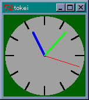 デフォルトサイズのアナログ時計これで、リサイズ可能なアナログ時計を作ることができました。ただ、縦長や横長にしても、ウィンドウ全体に時計が拡大されるわけではないので、やや物足りないかもしれません。興味のある方は時計を楕円にするなど、プログラムの改造に挑戦してください。